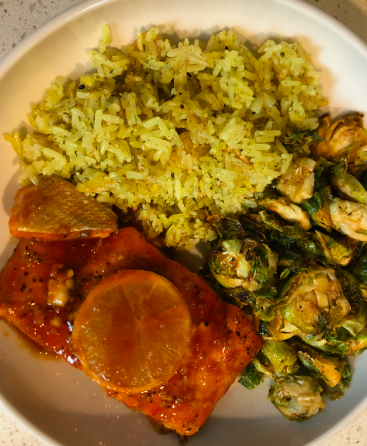

Sriracha Honey Salmon
Sara was just freestylin and made this, it came out pretty good though!
Salmon filets
2 tablespoons Sriracha
1 tablespoon honey
1 tablespoon of butter
1 teaspoon teriyaki sauce
Brussell sprouts
About 1 cup of rice
1 teaspoon turmeric
Sesame seeds
Salt, pepper to taste
- Preheat oven to 350F
- Get that rice going, being sure to add turmeric and sesame seeds
- Mix the honey and sriracha
- Glaze the salmon with the honey sriracha and bake for 15 to 18 minutes
- Quarter the butter, and place on top of the salmon and place in the oven
- In a sauceapn, add the brussel sprouts to a sauce pan under medium heat and cook to your liking
Home